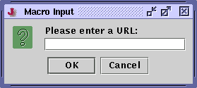

Prompting for Input
While recording a macro, invoking Macros>Prompt for Input will display a dialog box allowing you to record a special command which when played back, will prompt the user for input and store it in a specified register.
Figure 10-1. The Prompt for Input dialog box

Figure 10-2. What will happen when the macro is played back
